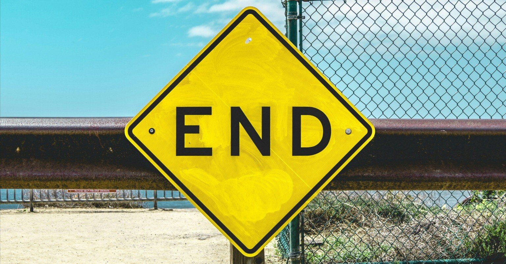

桜木町のカフェで相棒と話していると、近くのテーブルに座る男女の声が聞こえてきた。
「2025年問題って知っていますか？ 来年に迫ったこの年、日本は国民の5人に1人が後期高齢者になり、世界に類を見ない超高齢化社会を迎えることで生じる諸問題のことです」
男性が威勢よく話し始めたが、提供が早いと評判なこの店である。そのタイミングで店員が二人にコーヒーを出しにきた。
女性は小さく頭を下げるも、男性はそちらには見向きもせず、正面にいる女性から目線を外さない。次なる言葉を口に含ませている。
「そうなるとどうなるか？ 雇用や医療、福祉といった様々なところで労働力不足を中心に深刻な影響を及ぼす可能性があります。さらには長引く不景気で、社会保障費の負担が増加したり、企業が社の存続のために内部留保ばかり蓄えて社員に給与を出し渋ったりなど、もしかしたら貴方の子どもたちにも悪影響があるかもしれないのです。そして今後、我々はこれまで経験したことのない、経済の破綻に直面する恐れだってあるのですよ」
矢継ぎ早に繰り出される話を、年配の女性は健気に頷きながら耳を傾けている。
傍から見ても彼はデキるビジネスパーソン然としているからか、それが誇張されているように思える内容だとしても、彼女がその話を信じてしまいそうな気持ちが少しわかってしまう自分がいた。
「間近に迫っている諸問題に対する準備は必要不可欠です。いつからでも遅いなんてことはありません。まずはこちらをご覧ください」
そして、彼は都会風なビジネスバッグからパンフレットらしき冊子をテーブルに出した。文字の進行方向を彼女に向けて丁寧な語り口を崩すことなく、ここからが本番だと言わんばかりに自社の投資商品らしきものについて喋り始めた。
「終末論ビジネスに似た手口だな」
向かいに座る相棒は煙草に火をつけ、そちらを一瞥することなく呟いている。
さっきまでとは違い声の鳴りをなるべく潜めているものだから、僕もそれに影響されて同程度のボリュームで返答せざるを得ない。
「世界の終わりを最大限に意識させて、その不安を煽って利益を出そうとする連中のことか」
「1999年にもあっただろ？ 『ノストラダムスの大予言』って。と言っても、俺らはまだ年端もいかない子どもだったけれど、どうやらウチの親もまんまと引っかかっていたらしい。今は情報の窓口が様々になってきているから当時ほどではないにせよ、未だにああいうのが情報弱者を見つけてはカモにしているんだよ」
なんだかな、といった表情で虚空を見つめる。
気づけば、ついさっきまでしていた楽しい話が数日前のことのような感覚になっていた。彼は100％のウソをついてはいないにせよ、そしてそれが家族や大事な人と暮らしていくために避けては通れぬフローだとしても、やはりその仕事の仕方は賛同しかねるものだった。
そもそも終末論とは宗教哲学の言葉であり、人類はいつか破滅を迎える運命にあると説く、宗教上の思想のことである。
その内実は各宗教によって異なるものの、社会全体が政治的・経済的に不安定になり民が困窮する時代に、民が神や絶対者の審判に救済に求めようとするのは、どの宗教でも一般的に見られることのようだ。
本来はそうした言葉であるはずなのに、現代では世界の終焉を不安に思い誰かにすがりたい者を民、人類に終末など訪れるはずもないと思いながらそうした民たちの弱みに付け込む者を神とする、まるでそれは民側には何ひとつ利のない、悪魔との契約のような構図が出来上がっている。
ビジネスはあくまで自由意志のもと成り立つもののはずだが、そうした意志を現在の情勢を都合よく利用して大きく変形させ、自らの顧客にしてしまう闇ビジネスは、経済活動が続く限り消えることなんてないのだろう。そうした行為自体が、ある意味人類を破滅に導き、健全な社会を蝕んでいるとも知らない人たちの手によって、脈々と引き継がれながら。
そして、その境界線はますます曖昧になっていく。
インターネットの登場によって不特定多数の人たちとの通信が可能になったものの、相手がその世界で表明している諸々が真実かどうかなんてことまで僕たちには正直わからない。それが巧妙であればあるほどに。
ある意味、性善説のもとに成り立っているようなものだ。もちろん、そうした人たちだけによって構成されればよいのだが、人間には様々いる。人の心を持ち合わせないような連中が、そうした世界で善人を装って獲物を狙っていることだってあるかもしれない。そのためなら、言葉巧みに広告を打ち、費用対効果を考えながら実に身軽に行動してくる。そして、その相手に未成年も高齢者もない。利己の極地で、彼らはあの手この手で僕たちに罠を仕掛けてくるのである。
「おい。聞いているのか？」
気づけば、完全に自分の世界に没入していた。相棒は心配そうな顔を覗かせたが、僕がそれに気づくと、安心した面持ちで手元のブレンドに口をつけた。
何を考えていたのか聞かせてくれ。そういう目をしている。ちなみに、あの二人はすでに退店していた。
「つくづく、人間の欲深さに嫌気が差してさ。そもそも、金を得る手段のひとつに世界の終わりを使うこと自体がナンセンスだと思わないか。だったら、本当に世の中が終末に向かえば、そんな仕事なんて放り出して、それぞれが大事な人との時間に使わざるを得なくなる。そして、ようやく彼らは思い至るんだ。今まで何をやってきたんだろう、って」
「でも、決して改心なんてしないぜ。たとえ世が終わるその日になっても。どんなに理解しがたくても、それが彼らの正義なんだろうな」
そう言うと、相棒はおもむろにメニューを差し出してきた。
「久々に頭使ったら腹減った。ナポリタンでも頼もう。実はここのは美味いんだよ」
「知ってるよ。何度一緒に来てると思ってるんだ」
もし本当に世界の終わりが訪れたら、僕はどうするのだろう。
もちろん不安に思うだろう。連日眠れなくなる可能性だってある。でも、泣いても笑っても最後だ。どうせなら、その瞬間まで楽しく過ごしたい。今はそう思う。……多分、世界の前に僕が先に終わるだろうけど。
そして、終末の日お前なら何をするかと、相棒に問いかけている。
「そうだな、昼過ぎにこの店に集まって、将来どこに行きたいかでも話すか」
「本気か？ もう明日はやってこないんだよ。“終末”の意味、わかってる？」
「知ってはいるよ。でも昔を懐かしむより、その方が楽しくないか？ あの世であれしよこれしよってな」
冗談を言い合い、小刻みいい会話のキャッチボールをするうちに、さっきまでの重苦しい沈思黙考はどこか遠くに置いてきてしまったようだった。
世の中には想像を絶するほどの数の闇があって、その被害に遭う人たちを見るたび心を抉られ、もしかしたら自分自身もそうしたものに巻き込まれることもあるのだろう。
それでも、僕はこうしたささやかな光を大事にしながら、この世界で生きる最後の日まで「ああ、生きたなぁ。もう十分だ！」と胸を張れるほど生を謳歌したい。横行する闇に塗りつぶされぬよう、それがわずかでも大切な光を持ち続けながら。まだまだ死期を悟るような年齢でもないけれど、改めてそう思う。
そんなことを頭の隅で考えていたら、喋り続けていた目の前の相棒が突然口を噤み、唾を飲み込んだ。ほどなくして、ナポリタンの匂いが後ろから近づいてくるのを感じる。